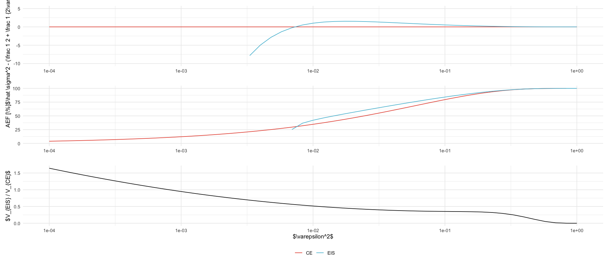
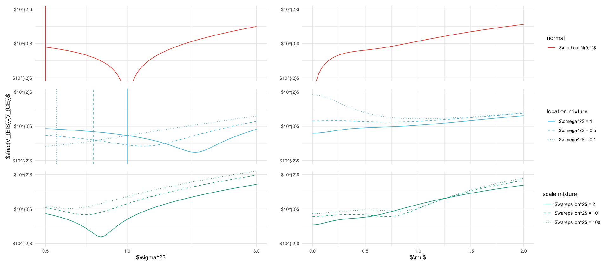
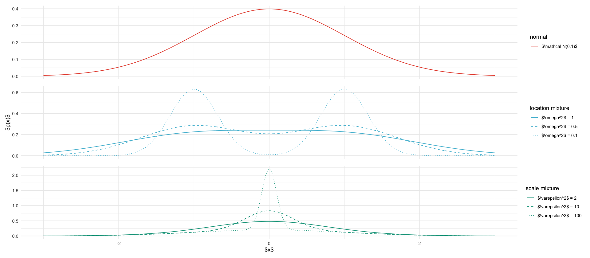
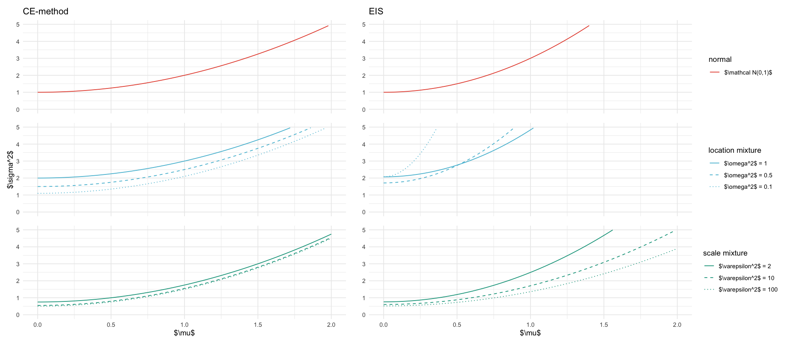
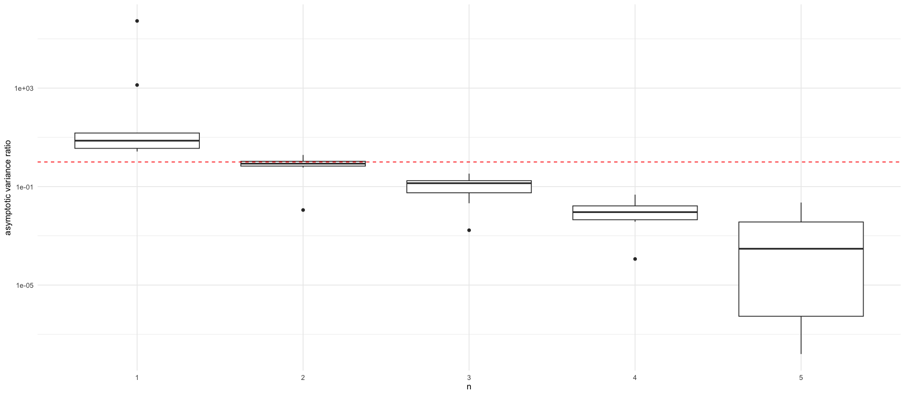
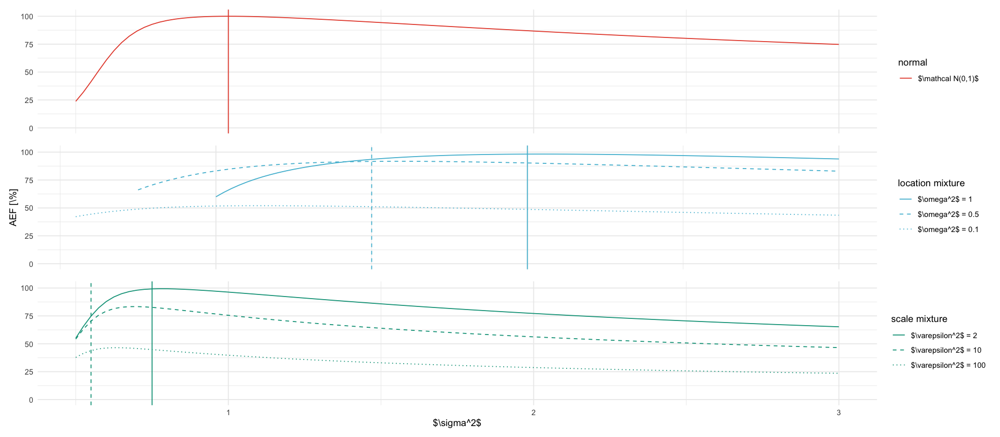
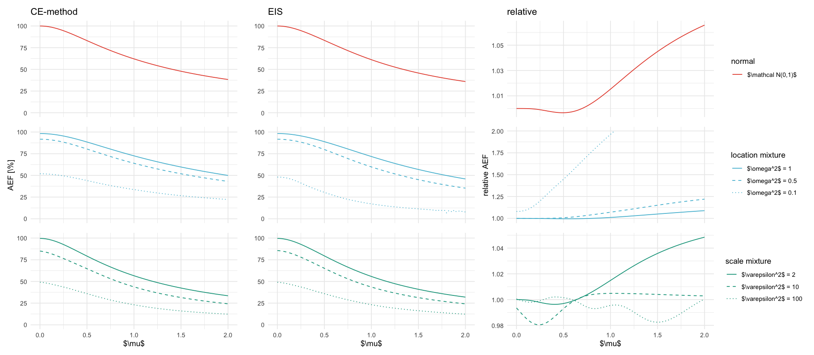
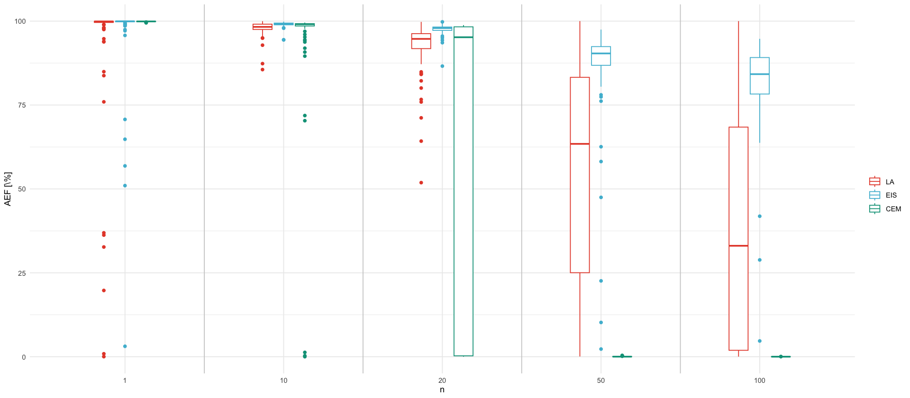

library(here)
source(here("setup.R"))here() starts at /Users/stefan/workspace/work/phd/thesis
tikz/gssm_eps.texp1 <- df_eps %>%
select(epsilon, sigma2_cem, sigma2_eis) %>%
pivot_longer(-epsilon, names_pattern = "sigma2_(.*)", values_to = "sigma2") %>%
mutate(name = ifelse(name == "cem", "CE", "EIS")) %>%
ggplot(aes(epsilon**2, sigma2 - (1 / 2 + 1 / 2 / epsilon**2), color = name)) +
geom_line() +
scale_x_log10() +
# scale_y_log10() +
scale_color_discrete(name = "") +
labs(x = "", y = "$\\hat \\sigma^2 - (\\frac 1 2 + \\frac 1 {2\\varepsilon^2})$") +
ylim(-10, 5)
p2 <- df_eps %>%
select(epsilon, starts_with("rho")) %>%
pivot_longer(-epsilon, names_pattern = "rho_(.*)", values_to = "rho") %>%
mutate(name = ifelse(name == "cem", "CE", "EIS")) %>%
ggplot(aes(epsilon**2, 1 / rho * 100, color = name)) +
geom_line() +
scale_x_log10() +
labs(x = "", y = "AEF [\\%]") +
scale_color_discrete(name = "") +
ylim(0, 100)
p3 <- df_eps %>%
select(epsilon, are) %>%
ggplot(aes(epsilon**2, are)) +
geom_line() +
scale_x_log10() +
labs(x = "$\\varepsilon^2$", y = "$V_{EIS} / V_{CE}$") +
theme(legend.position = "bottom")
(p1 / p2 / p3) + plot_layout(guides = "collect") & theme(legend.position = "bottom")
ggsave_tikz(here("tikz/gsmm_eps.tex"))Warning message: “Removed 19 rows containing missing values or values outside the scale range (`geom_line()`).” Warning message: “Removed 24 rows containing missing values or values outside the scale range (`geom_line()`).” Warning message: “Removed 19 rows containing missing values or values outside the scale range (`geom_line()`).” Warning message: “Removed 24 rows containing missing values or values outside the scale range (`geom_line()`).”

targets_meta = read_csv(here("data/figures/fixed_mu_s2_target_meta.csv")) %>%
mutate(type = case_when(
str_detect(P, "location") ~ "location mixture",
str_detect(P, "scale") ~ "scale mixture",
TRUE ~ "normal"
)) %>%
mutate(type = factor(type, levels=c("normal", "location mixture", "scale mixture"))) %>%
mutate(description = case_when(
str_detect(P, "location") ~ str_glue("{param_name} = {param_value}"),
str_detect(P, "scale") ~ str_glue("{param_name} = {param_value}"),
TRUE ~ "$\\mathcal N(0,1)$"
)) %>%
mutate(description = factor(description)) %>%
mutate(description = fct_relevel(
description,
"$\\mathcal N(0,1)$",
"$\\omega^2$ = 1",
"$\\omega^2$ = 0.5",
"$\\omega^2$ = 0.1",
"$\\varepsilon^2$ = 2",
"$\\varepsilon^2$ = 10",
"$\\varepsilon^2$ = 100"
))target_linetypes <- scale_linetype_manual(
values = c(
"$\\mathcal N(0,1)$" = "solid",
"$\\omega^2$ = 1" = "solid",
"$\\omega^2$ = 0.5" = "dashed",
"$\\omega^2$ = 0.1" = "dotted",
"$\\varepsilon^2$ = 2" = "solid",
"$\\varepsilon^2$ = 10" = "dashed",
"$\\varepsilon^2$ = 100" = "dotted"
),
)
global_shared_geoms <- list(
facet_wrap(~type, ncol = 1),
target_linetypes
)
shared_geoms <- list(
coord_cartesian(ylim = c(1e-2, 1e2)),
scale_y_log10(breaks = 10^(c(-2, 0, 2)), labels = paste0("$10^{", c(-2, 0, 2), "}$")),
labs(y = "$\\frac{V_{EIS}}{V_{CE}}$", color="", linetype="")
)tikz/are.tex# NPG colors from ggsci
npg_colors <- c("#E64B35", "#4DBBD5", "#00A087", "#3C5488", "#F39B7F", "#8491B4", "#91D1C2", "#DC0000", "#7E6148", "#B09C85")
# Define color palettes for each type
colors_normal <- c("$\\mathcal N(0,1)$" = npg_colors[1])
colors_location <- c(
"$\\omega^2$ = 1" = npg_colors[2],
"$\\omega^2$ = 0.5" = npg_colors[2],
"$\\omega^2$ = 0.1" = npg_colors[2]
)
colors_scale <- c(
"$\\varepsilon^2$ = 2" = npg_colors[3],
"$\\varepsilon^2$ = 10" = npg_colors[3],
"$\\varepsilon^2$ = 100" = npg_colors[3]
)
plots <- bind_rows(
fixed_s2 %>% mutate(id = "fixed_s2"),
fixed_mu %>% mutate(id = "fixed_mu")
) %>%
inner_join(targets_meta, by="P") %>%
#select(id, type, mu, s2, description, var_ratio) %>%
group_by(type) %>%
nest() %>%
mutate(
data_fixed_s2 = map(data, ~ filter(.x, id == "fixed_s2")),
data_fixed_mu = map(data, ~ filter(.x, id == "fixed_mu")),
data = NULL,
colors = case_when(
type == "normal" ~ list(colors_normal),
type == "location mixture" ~ list(colors_location),
type == "scale mixture" ~ list(colors_scale)
)
) %>%
ungroup() %>%
mutate(row_idx = row_number(), n_rows = n()) %>%
mutate(
plot = pmap(list(type, data_fixed_s2, data_fixed_mu, colors, row_idx, n_rows), function(type, data_fixed_s2, data_fixed_mu, colors, row_idx, n_rows) {
color_scale <- scale_color_manual(values = colors)
is_last <- row_idx == n_rows
is_middle <- row_idx == ceiling(n_rows / 2)
legend_title <- as.character(type)
x_axis_theme <- if (!is_last) {
theme(axis.title.x = element_blank(), axis.text.x = element_blank(), axis.ticks.x = element_blank())
} else {
theme()
}
y_label <- if (is_middle) "$\\frac{V_{EIS}}{V_{CE}}$" else ""
p_s2 <- ggplot(data_fixed_s2, aes(x=s2, y=var_ratio, color=description, linetype=description)) +
geom_line() +
geom_vline(aes(xintercept = tau2/2, color=description, linetype=description), data = data_fixed_s2 %>% filter(abs(s2 - tau2/2) == min(abs(s2-tau2/2))), show.legend = FALSE) +
shared_geoms +
target_linetypes +
color_scale +
labs(x="$\\sigma^2$", y=y_label, color=legend_title, linetype=legend_title) +
theme(legend.position = "bottom") +
x_axis_theme +
scale_x_log10(limits = c(1/2, 3))
p_mu <- ggplot(data_fixed_mu, aes(x=mu, y=var_ratio, color=description, linetype=description)) +
geom_line() +
shared_geoms +
target_linetypes +
color_scale +
labs(x="$\\mu$", y="", color=legend_title, linetype=legend_title) +
theme(legend.position = "bottom") +
x_axis_theme
(p_s2 | p_mu) + plot_layout(guides = "collect") & theme(legend.position = "right")
}
)
)
# add manual legend at the bottom: 'x' = $\\sigma^2 = \\tau^2/2$ for fixed $\\mu$ and $\\mu = 0$ for fixed $\\sigma^2$
(plots$plot[[1]] / plots$plot[[2]] / plots$plot[[3]])
ggsave_tikz(here("tikz/are.tex"), width=8, height= 10)Warning message in scale_y_log10(breaks = 10^(c(-2, 0, 2)), labels = paste0("$10^{", :
“log-10 transformation introduced infinite values.”
Warning message:
“Removed 1 row containing missing values or values outside the scale range
(`geom_vline()`).”
Warning message in scale_y_log10(breaks = 10^(c(-2, 0, 2)), labels = paste0("$10^{", :
“log-10 transformation introduced infinite values.”
Warning message:
“Removed 1 row containing missing values or values outside the scale range
(`geom_vline()`).”

tikz/targets.texxs <- seq(-3, 3, length.out=1000)
gmm_location <- function(omega2) {
function(x) {
0.5 * dnorm(x, mean=-1, sd=sqrt(omega2)) + 0.5 * dnorm(x, mean=1, sd=sqrt(omega2))
}
}
gmm_scale <- function(eps2) {
function(x) {
0.5 * dnorm(x, mean=0, sd=1) + 0.5 * dnorm(x, mean=0, sd=1/sqrt(eps2))
}
}
targets <- tibble(
"Normal" = dnorm(xs, mean=0, sd=1),
"GMM_location_0.10" = gmm_location(0.1)(xs),
"GMM_location_0.50" = gmm_location(0.5)(xs),
"GMM_location_1.00" = gmm_location(1.0)(xs),
"GMM_scale_2.00" = gmm_scale(2.0)(xs),
"GMM_scale_10.00" = gmm_scale(10.0)(xs),
"GMM_scale_100.00" = gmm_scale(100.0)(xs),
x = xs
)
target_plots <- targets %>%
pivot_longer(-x) %>%
inner_join(targets_meta, by=c("name"="P")) %>%
group_by(type) %>%
nest() %>%
mutate(
colors = case_when(
type == "normal" ~ list(colors_normal),
type == "location mixture" ~ list(colors_location),
type == "scale mixture" ~ list(colors_scale)
)
) %>%
ungroup() %>%
mutate(row_idx = row_number(), n_rows = n()) %>%
mutate(
plot = pmap(list(type, data, colors, row_idx, n_rows), function(type, data, colors, row_idx, n_rows) {
color_scale <- scale_color_manual(values = colors)
is_last <- row_idx == n_rows
is_middle <- row_idx == ceiling(n_rows / 2)
legend_title <- as.character(type)
x_axis_theme <- if (!is_last) {
theme(axis.title.x = element_blank(), axis.text.x = element_blank(), axis.ticks.x = element_blank())
} else {
theme()
}
y_label <- if (is_middle) "$p(x)$" else ""
ggplot(data, aes(x=x, y=value, color=description, linetype=description)) +
geom_line() +
target_linetypes +
color_scale +
labs(x="$x$", y=y_label, color=legend_title, linetype=legend_title) +
theme(legend.position = "right") +
x_axis_theme
})
)
target_plots$plot[[1]] / target_plots$plot[[2]] / target_plots$plot[[3]]
ggsave_tikz(here("tikz/targets.tex"), width=8, height= 5)
tikz/cem_eis_sigma2.texs2_plots <- fixed_mu %>%
inner_join(targets_meta, by="P") %>%
group_by(type) %>%
nest() %>%
mutate(
colors = case_when(
type == "normal" ~ list(colors_normal),
type == "location mixture" ~ list(colors_location),
type == "scale mixture" ~ list(colors_scale)
)
) %>%
ungroup() %>%
mutate(row_idx = row_number(), n_rows = n()) %>%
mutate(
plot = pmap(list(type, data, colors, row_idx, n_rows), function(type, data, colors, row_idx, n_rows) {
color_scale <- scale_color_manual(values = colors)
is_first <- row_idx == 1
is_middle <- row_idx == ceiling(n_rows / 2)
is_last <- row_idx == n_rows
legend_title <- as.character(type)
x_axis_theme <- if (!is_last) {
theme(axis.title.x = element_blank(), axis.text.x = element_blank(), axis.ticks.x = element_blank())
} else {
theme()
}
title_ce <- if (is_first) "CE-method" else NULL
title_eis <- if (is_first) "EIS" else NULL
y_label <- if (is_middle) "$\\sigma^2$" else ""
p_s2_ce <- ggplot(data, aes(x=mu, y=s2_ce, color=description, linetype=description)) +
geom_line() +
target_linetypes +
color_scale +
labs(x="$\\mu$", y=y_label, color=legend_title, linetype=legend_title) +
ylim(0, 5) +
ggtitle(title_ce) +
theme(legend.position = "bottom") +
x_axis_theme
p_s2_eis <- ggplot(data, aes(x=mu, y=s2_eis, color=description, linetype=description)) +
geom_line() +
target_linetypes +
color_scale +
labs(x="$\\mu$", y="", color=legend_title, linetype=legend_title) +
ylim(0, 5) +
ggtitle(title_eis) +
theme(legend.position = "bottom") +
x_axis_theme
(p_s2_ce | p_s2_eis) + plot_layout(guides = "collect") & theme(legend.position = "right")
})
)
s2_plots$plot[[1]] / s2_plots$plot[[2]] / s2_plots$plot[[3]]
ggsave_tikz(here("tikz/cem_eis_sigma2.tex"), width=8, height= 5)Warning message: “Removed 1 row containing missing values or values outside the scale range (`geom_line()`).” Warning message: “Removed 30 rows containing missing values or values outside the scale range (`geom_line()`).” Warning message: “Removed 23 rows containing missing values or values outside the scale range (`geom_line()`).” Warning message: “Removed 187 rows containing missing values or values outside the scale range (`geom_line()`).” Warning message: “Removed 23 rows containing missing values or values outside the scale range (`geom_line()`).” Warning message: “Removed 1 row containing missing values or values outside the scale range (`geom_line()`).” Warning message: “Removed 30 rows containing missing values or values outside the scale range (`geom_line()`).” Warning message: “Removed 23 rows containing missing values or values outside the scale range (`geom_line()`).” Warning message: “Removed 187 rows containing missing values or values outside the scale range (`geom_line()`).” Warning message: “Removed 23 rows containing missing values or values outside the scale range (`geom_line()`).”

tikz/ssm_comparison_asymptotic_variance.texdf_are <- read_csv(here("data/figures/are_meis_cem_ssms.csv"))
p_are <- df_are %>%
filter(n <= 5) %>%
# ARE here is for CEM vs. EIS ,we want EIS vs. CEM
ggplot(aes(x = factor(n), y = 1/ARE)) +
geom_boxplot() +
labs(x = "n", y = "asymptotic variance ratio", color="") +
geom_hline(yintercept = 1, linetype="dashed", color = "red") +
scale_y_log10()
ggsave_tikz(
here("tikz/ssm_comparison_asymptotic_variance.tex"),
plot = p_are
)
p_areWarning message: “Removed 3 rows containing non-finite outside the scale range (`stat_boxplot()`).”
Warning message: “Removed 3 rows containing non-finite outside the scale range (`stat_boxplot()`).”

tikz/rho_mu.texrho_s2_plots <- fixed_s2 %>%
inner_join(targets_meta, by="P") %>%
filter(tau2 / 2 <= s2) %>%
group_by(type) %>%
nest() %>%
mutate(
colors = case_when(
type == "normal" ~ list(colors_normal),
type == "location mixture" ~ list(colors_location),
type == "scale mixture" ~ list(colors_scale)
)
) %>%
ungroup() %>%
mutate(row_idx = row_number(), n_rows = n()) %>%
mutate(
plot = pmap(list(type, data, colors, row_idx, n_rows), function(type, data, colors, row_idx, n_rows) {
color_scale <- scale_color_manual(values = colors)
is_middle <- row_idx == ceiling(n_rows / 2)
is_last <- row_idx == n_rows
legend_title <- as.character(type)
x_axis_theme <- if (!is_last) {
theme(axis.title.x = element_blank(), axis.text.x = element_blank(), axis.ticks.x = element_blank())
} else {
theme()
}
y_label <- if (is_middle) "AEF [\\%]" else ""
ggplot(data, aes(x=s2, y=ef_ce, color=description, linetype=description)) +
geom_line() +
geom_vline(
aes(xintercept = tau2, color=description, linetype=description), data = data %>% filter(abs(s2 - tau2) == min(abs(s2-tau2))), show.legend = FALSE) +
target_linetypes +
color_scale +
labs(x="$\\sigma^2$", y=y_label, color=legend_title, linetype=legend_title) +
ylim(0, 101) +
theme(legend.position = "right") +
x_axis_theme
})
)
rho_s2_plots$plot[[1]] / rho_s2_plots$plot[[2]] / rho_s2_plots$plot[[3]]
ggsave_tikz(here("tikz/rho_mu.tex"), width = 8, height = 5)
tikz/rho.texrho_plots <- fixed_mu %>%
inner_join(targets_meta, by="P") %>%
mutate(relative_ef = ifelse(ef_ce/ef_eis > 2, NA, ef_ce/ef_eis)) %>%
group_by(type) %>%
nest() %>%
mutate(
colors = case_when(
type == "normal" ~ list(colors_normal),
type == "location mixture" ~ list(colors_location),
type == "scale mixture" ~ list(colors_scale)
)
) %>%
ungroup() %>%
mutate(row_idx = row_number(), n_rows = n()) %>%
mutate(
plot = pmap(list(type, data, colors, row_idx, n_rows), function(type, data, colors, row_idx, n_rows) {
color_scale <- scale_color_manual(values = colors)
is_first <- row_idx == 1
is_middle <- row_idx == ceiling(n_rows / 2)
is_last <- row_idx == n_rows
legend_title <- as.character(type)
x_axis_theme <- if (!is_last) {
theme(axis.title.x = element_blank(), axis.text.x = element_blank(), axis.ticks.x = element_blank())
} else {
theme()
}
title_ce <- if (is_first) "CE-method" else NULL
title_eis <- if (is_first) "EIS" else NULL
title_relative <- if (is_first) "relative" else NULL
y_label_aef <- if (is_middle) "AEF [\\%]" else ""
y_label_relative <- if (is_middle) "relative AEF" else ""
p_ce <- ggplot(data, aes(x=mu, y=ef_ce, color=description, linetype=description)) +
geom_line() +
target_linetypes +
color_scale +
labs(x="$\\mu$", y=y_label_aef, color=legend_title, linetype=legend_title) +
ylim(0, 101) +
ggtitle(title_ce) +
theme(legend.position = "bottom") +
x_axis_theme
p_eis <- ggplot(data, aes(x=mu, y=ef_eis, color=description, linetype=description)) +
geom_line() +
target_linetypes +
color_scale +
labs(x="$\\mu$", y="", color=legend_title, linetype=legend_title) +
ylim(0, 101) +
ggtitle(title_eis) +
theme(legend.position = "bottom") +
x_axis_theme
p_relative <- ggplot(data, aes(x=mu, y=relative_ef, color=description, linetype=description)) +
geom_line() +
target_linetypes +
color_scale +
labs(x="$\\mu$", y=y_label_relative, color=legend_title, linetype=legend_title) +
ggtitle(title_relative) +
theme(legend.position = "bottom") +
x_axis_theme
(p_ce | p_eis | p_relative) + plot_layout(guides = "collect") & theme(legend.position = "right")
})
)
rho_plots$plot[[1]] / rho_plots$plot[[2]] / rho_plots$plot[[3]]
ggsave_tikz(here("tikz/rho.tex"), width=7, height= 10)Warning message: “Removed 48 rows containing missing values or values outside the scale range (`geom_line()`).” Warning message: “Removed 48 rows containing missing values or values outside the scale range (`geom_line()`).”

| nanmax | n_nan |
|---|---|
| <dbl> | <int> |
| 2.015104 | 2 |
tikz/ssm_comparison_efficiency_factor.texunique_n <- df_ef$n %>% unique() %>% sort()
p_ef <- df_ef %>%
select(n, LA=EF_LA, CEM=EF_CEM, EIS=EF_MEIS) %>%
pivot_longer(-n, names_to = "Method", values_to = "EF") %>%
mutate(Method = factor(Method, levels=c("LA", "EIS", "CEM"))) %>%
ggplot(aes(x = factor(n), y = EF, color = Method, group=interaction(factor(n), Method))) +
geom_vline(xintercept = seq(1.5, length(unique_n) - 0.5, by = 1), color = "grey80", linewidth = 0.5) +
geom_boxplot(width = 0.4) +
labs(x = "n", y = "AEF [\\%]", color="")
ggsave_tikz(
here("tikz/ssm_comparison_efficiency_factor.tex"),
plot = p_ef
)
p_efWarning message: “Removed 287 rows containing non-finite outside the scale range (`stat_boxplot()`).”
Warning message: “Removed 287 rows containing non-finite outside the scale range (`stat_boxplot()`).”

tables/ssm_comparison_missing_values.tex